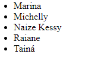

As listas HTML permitem que os desenvolvedores da WEB agrupem um conjunto de itens relacionados em lista.
Aqui estão dois exemplos de listas :
Lista não ordenada

Lista ordenada
Uma lista não ordenada começa com <ul> e finaliza com </ul>.E cada item da lista começa com <li> e finaliza com </li>
Os itens da lista são marcados com marcador de pequenos circulos pretos, por padrão.
Exemplo:
<ul>
<li> Marina </li>
<li> Michelly </li>
<li> Naize Kessy </li>
<li> Raiane </li>
<li> Tainá </li>
</ul>
Uma lista ordenada começa com <ul> e finaliza com </ul> .E cada item da lista começa com <li> e finaliza com </li>
Os itens da lista são marcados com marcador numeral, por padrão.
Exemplo:
<ol>
<li> Marina </li>
<li> Michelly </li>
<li> Naize Kessy </li>
<li> Raiane </li>
<li> Tainá </li>
</ol>